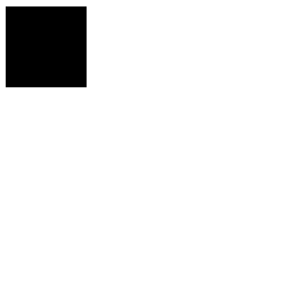
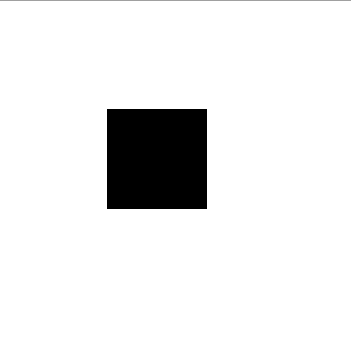
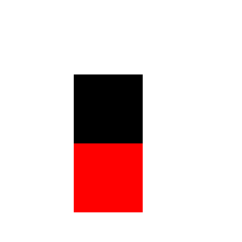
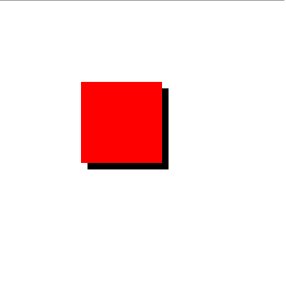
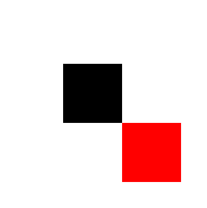

| < July 2015 > | ||||||
|---|---|---|---|---|---|---|
| Su | M | T | W | Th | F | Sa |
| 1 | 2 | 3 | 4 | |||
| 5 | 6 | 7 | 8 | 9 | 10 | 11 |
| 12 | 13 | 14 | 15 | 16 | 17 | 18 |
| 19 | 20 | 21 | 22 | 23 | 24 | 25 |
| 26 | 27 | 28 | 29 | 30 | 31 | |
Positioning content in CSS can be complicated. Objects on a webpage have a position type of 'static' by default, but we can change this to 'relative', 'absolute', or 'fixed'. Static simply means the objects will behave naturally in accordance with their sibling and parent objects. We will discuss the other three in the following.
Relative positioning is fairly straight forward. It allows you to move your object around the page relative to it's starting position. Let's go through an example! Here we have a square div. It is in the it's natural static position.

Now let us add relative positioning to the div. We add the follwing code to our CSS document:
div {
position: relative;
left: 100px;
top:100px;
}
And the box moves!

In fact, it moves one hundred pixels from the left and one hundred pixels from the top relative to the starting position. It is also worth noting that the original position of the object is preserved. What this means is that even though we have moved our object, a new object will not be able to occupy the original position. We can see this in the following:

Note here that the new red div ought to be in the upper left corner, but because the black one is relatively positioned, the red simply stacks underneath.
Absolute positioning is similar to relative positioning, but with a few key differences. Let's give our new red block the property "position: absolute;" and see what happens:

It stacks on the black block! Absolute positioning takes an object out of the normal flow of the page, it's starting point is not preserved, in contrast with relative objects. An absolute object orients itself in relation to it's closest parent object that has relative positioning. In this case there is no parent with relative positioning for our red block, so it orients itself in relation to the <body> tag. This happens to be the space formerly occupied by the black block, and as a result we get this layering. Now, what if we nest the red block inside the black block in our code? Let's take a look, presented is the html and the result. Remember, the black block has relative positioning while the red has absolute:
<div class="black">
<div class="red"></div>
</div>

We can see now the red block is positioned relative to the parent black block, and we can move the red however we may desire.
The final position type is fixed. Fixed positioning means exactly as it sounds, the object will be stuck in place. Regardless of vertical or horizontal scrolling the object will remain fixed on the screen. This can be particularly useful for menus or navigation bars, for example.
These concepts, on paper, sound kind of complicated. Hopefully this was somewhat informative and helps explain it, but mostly I would strongly suggest just going into the chrome devtools and experiment with moving things around a page. The instant connection you can make visually when you change the code in incredibly helpful, and probably clearer than anything I could write.